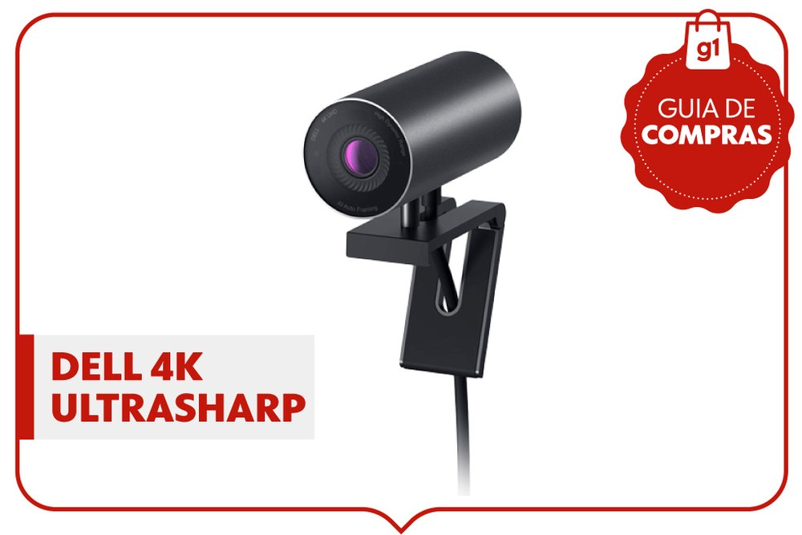
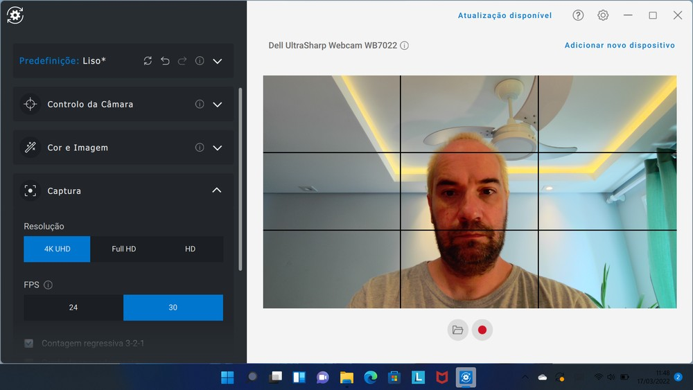
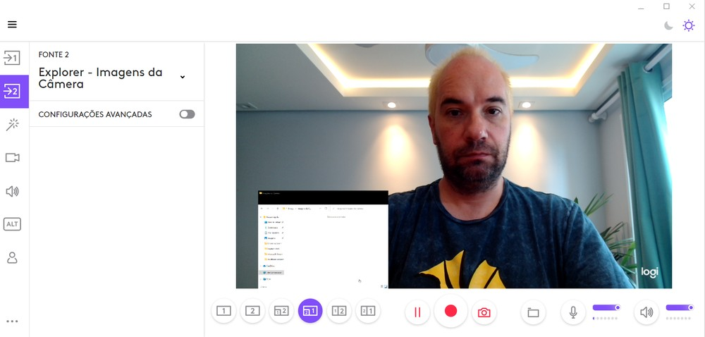
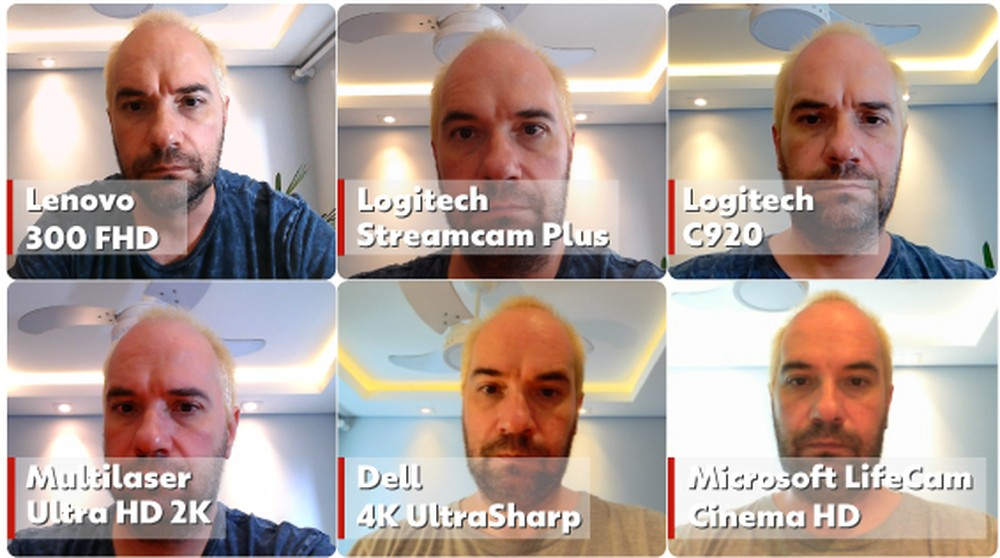

Webcam compensa ? g1 testa modelos com vídeo de alta resolução
Colocar uma nova câmera no computador vale a pena para melhorar a qualidade de imagem de videochamadas e aulas on-line; veja o teste.
Por Henrique Martin, g1
18/03/2022 06h01 · Atualizado há 3 horas


Guia de Compras: teste de webcams - foto: g1
Com a ascensão do home office, a webcam voltou a ganhar mercado, atraindo quem precisa ou prefere uma qualidade melhor de imagem para reuniões e ou aulas on-line. Afinal, os notebooks têm câmeras de qualidade baixa, que não permitem ajustes e deixam o vídeo escuro demais ou com péssima definição.
Outros guias:
O g1 testou seis modelos de webcams, com preços que iam de R$ 250 a R$ 1.700 nas lojas on-line em março. Todas as câmeras têm uma qualidade de imagem melhor que a de notebooks, em geral, mesmo nos modelos mais baratos.
As webcams testadas foram:
O que as câmeras do teste têm em comum:
Veja os resultados do teste a seguir e, no final da reportagem, leia a conclusão.
A Dell 4K UltraSharp é a câmera mais avançada entre as testadas, e isso tem um preço alto. No meio de março, ela era vendida nas lojas on-line por R$ 1.700, sendo a mais cara entre as avaliadas.
A webcam tem resolução 4K (8,3 megapixels), com ajuste de ângulo de imagem – com plano mais aberto ou fechado.
Peripheral Manager ajuda a configurar a câmera da Dell — Foto: g1
Nos testes, a imagem dos vídeos em chamadas e no app de Câmera do Windows 11 foi excelente, com cores bem definidas e realistas e foco rápido que acompanha o rosto.
Vale notar que a Dell 4K UltraSharp não tem microfone integrado e é preciso usar um headset ou o microfone integrado do computador.
A câmera tem certificação para o Microsoft Teams e é otimizada, segundo a Dell, para uso em outros apps como Skype, Google Meet, Blue Jeans e Slack, entre outros.
O modelo, com acabamento em alumínio, vem com uma tampa de privacidade para fechar a lente, um suporte móvel para ajuste em cima do monitor/notebook e um encaixe para tripé.
Onde comprar o produto:
Lenovo 300 FHD — Foto: g1
A Lenovo 300 FHD é o modelo mais barato entre as webcams testadas . Custava R$ 250 nas lojas on-line em março.
A câmera, com acabamento em plástico, tem uma tampa móvel de privacidade e se encaixa com facilidade em notebooks e monitores. Sua resolução é de 2 megapixels, capaz de gerar imagens em Full HD (1920 x 1080).
A qualidade de é melhor que a dos notebooks em geral. Mesmo uma câmera "barata" aprimora bastante a experiência em vídeo.
Onde comprar o produto:
Logitech C920S — Foto: g1
Com resolução Full HD, a Logitech C920S teve o melhor desempenho entre as webcams mais em conta, em comparação com Lenovo , Microsoft e Multilaser.
O modelo era vendido em março nas lojas on-line por R$ 500.
A qualidade de imagem é excelente, com nitidez e cores bastante realistas. O áudio, com dois microfones, também é muito bom.
Aplicativo Connect para as webcams da Logitech — Foto: g1
A câmera tem uma tampa de privacidade e seu apoio traz encaixe para tripé, além do monitor ou notebook. A Logitech diz que o modelo é compatível com os principais apps de videochamada.
Onde comprar o produto:
Conclusão
MELHOR CUSTO-BENEFÍCIO: A logitec C920S tem a melhor qualidade de imagem com preço na faixa dos R$ 500 e substitui muito bem a câmera – e o microfone interno – do notebook. O software Logitech Capture traz muitos recursos adicionais e amplia o uso da câmera.
Teste de Webcams: Dell tem imagem mais clara e definida, Logitech C920, a mais nítida — Foto: g1